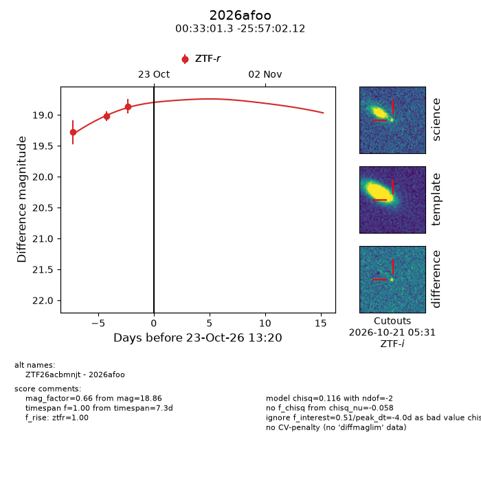
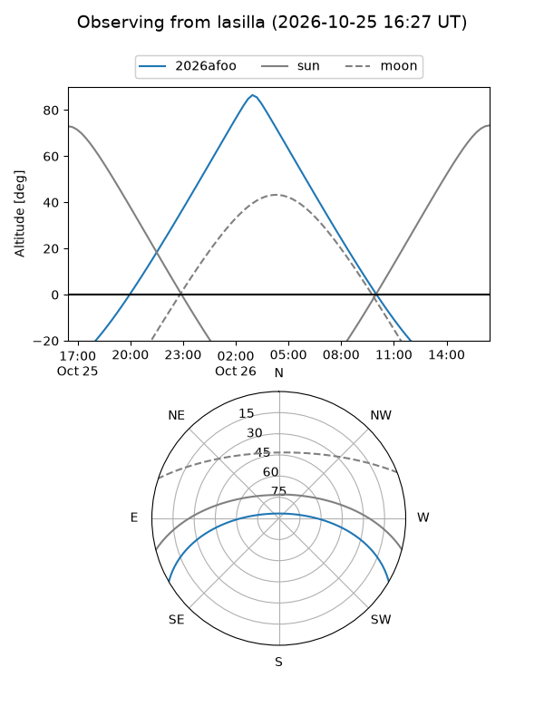
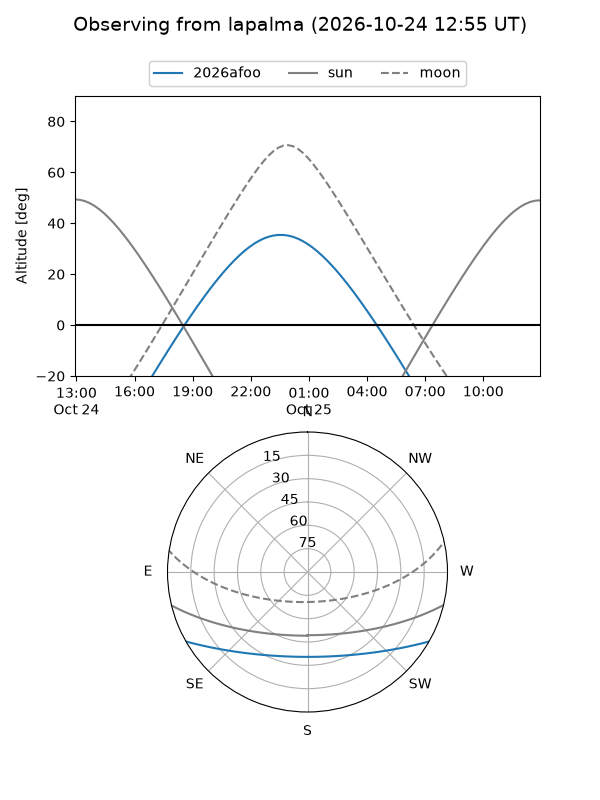
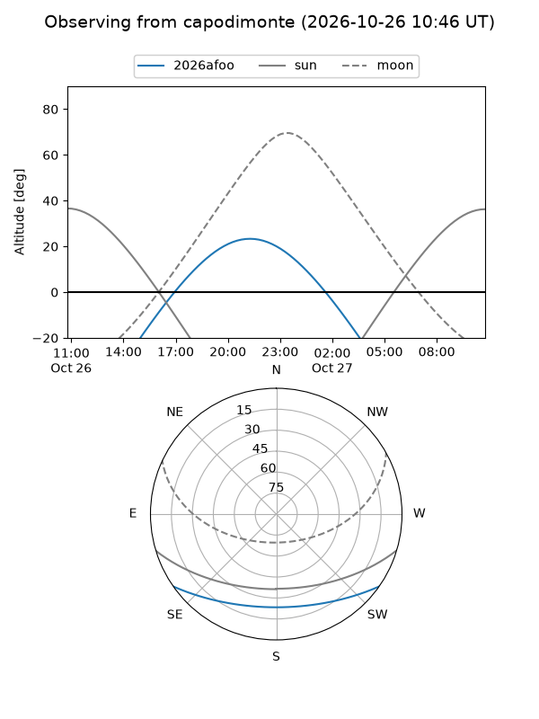
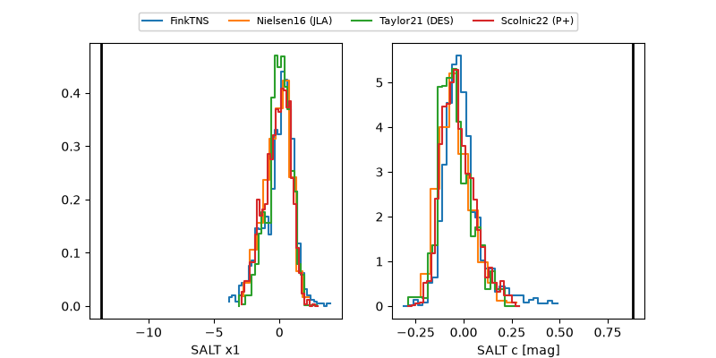

2026afoo
Target 2026afoo at 2026-10-23 13:22
Aliases and brokers:
FINK-ZTF: ztf.fink-portal.org/ZTF26acbmnjt
Lasair-ZTF: lasair-ztf.lsst.ac.uk/objects/ZTF26acbmnjt
ALeRCE-ZTF: alerce.online/object/ZTF26acbmnjt
YSE-PZ: ziggy.ucolick.org/yse/transient_detail/2026afoo
TNS name: wis-tns.org/object/2026afoo
Direct TNS query: direct search
alt names
ZTF26acbmnjt (ztf,fink_ztf)
2026afoo (tns,yse)
Coordinates:
equatorial (ra, dec) = 8.2556,-25.95059
equatorial (HMS+DMS) = 00:33:01.35,-25:57:02.12
galactic (l, b) = (47.8512,-85.71654)
Flags:
peak dt: -4.0
Photometry:
last ztfr=18.86
3 ztfr detections
Lightcurve

Visibility



Additional plots
